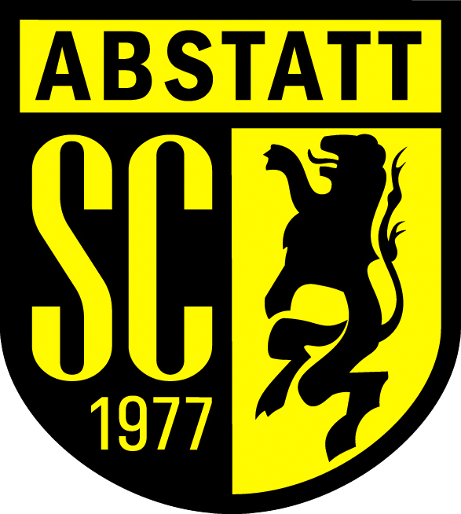
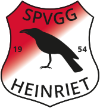

Martin Kimmig
Sprecher ABI Jugendkoordinator

Orcun Poslu
Jugendleiter des SC Abstatt
Nils Stratemeyer
Jugendleiter des TGV Eintracht Beilstein
Bernhard Grimm
Jugendleiter des SC Ilsfeld

Michael Offergeld
Jugendleiter des Spvgg Heinriet